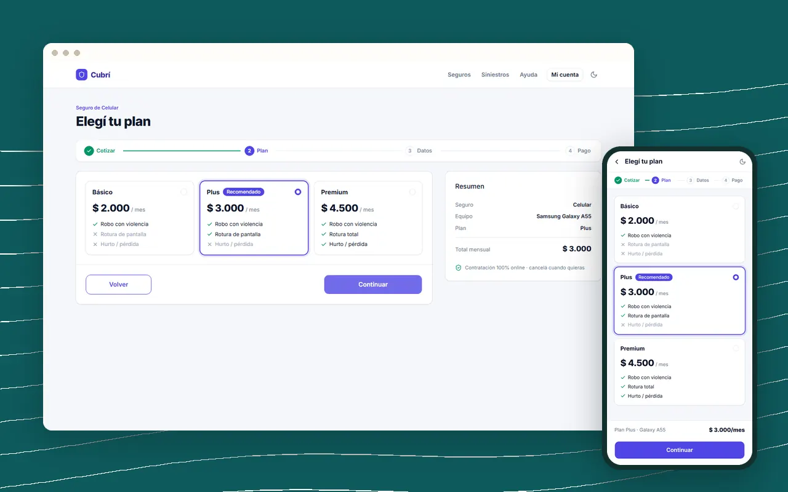
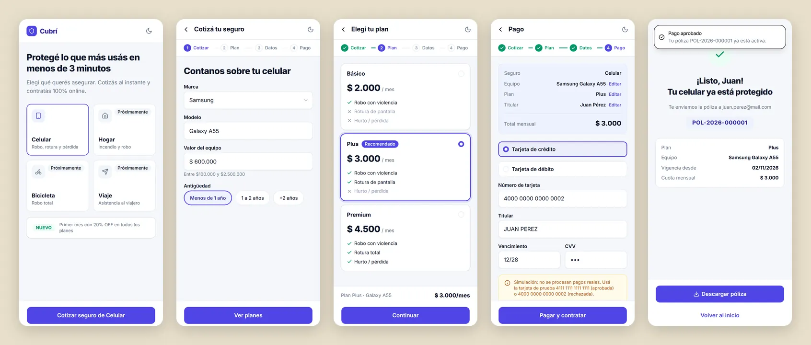
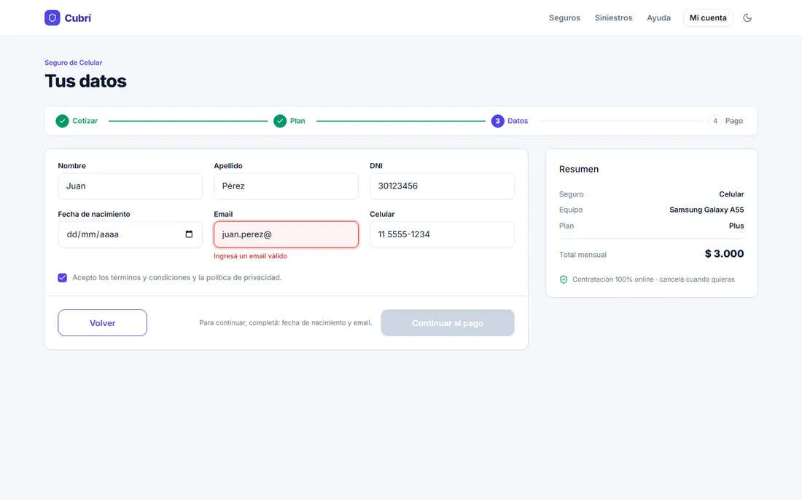
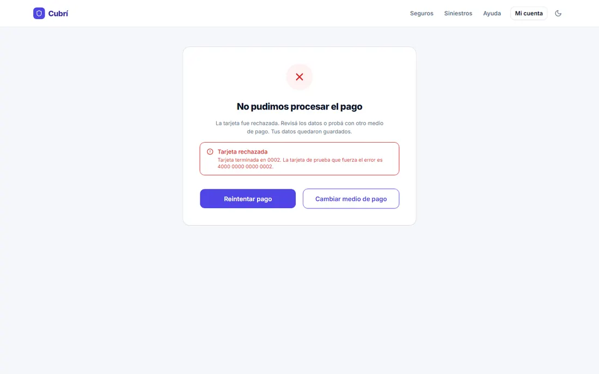

Caso de estudio · 2026
Cubrí Seguros: contratar un seguro de celular sin perderse en el camino
Un flujo de cuatro pasos que lleva a la persona de la cotización a la póliza, en mobile y en desktop.
- Mi rol
- Interacción, maquetado y JavaScript (individual)
- Contexto
- Trabajo práctico de Diseño UX-UI, FCyT UADER
- Herramientas
- Figma, Tailwind v4, Basecoat, JavaScript

1 · Problema
Muchos datos sensibles y ninguna paciencia
Para contratar un seguro hay que informar el valor del equipo, su antigüedad, datos personales y una tarjeta. Si en el medio aparece un error confuso, se pierde lo cargado o el precio cambia entre pantallas, es fácil que la persona desconfíe y abandone.
El desafío era implementar ese flujo a partir de un diseño base en Figma (mobile 390 y desktop 1440) sin que el código rompiera esa confianza.
2 · Proceso
Del Figma a un flujo que no pierde nada
- Tokens primero. Pasé colores, radios y tipografía del Figma a variables, para que cada pantalla saliera de la misma fuente.
- Un único estado. Toda la solicitud vive en un objeto y cada evento vuelve a pintar la pantalla. Por eso “Volver” nunca borra datos.
- Reglas puras. Cada validación es una función que recibe un valor y devuelve un mensaje o nada, fácil de probar por separado.
- Pruebas. Escribí 30 tests de las funciones y recorrí el flujo completo en Chrome, en mobile y desktop.
3 · Solución
Decisiones que se notan al usarlo



- Un solo precio. Una única función calcula la cuota para tarjetas, resumen, éxito y comprobante.
- Botones que explican. Si “Continuar” está deshabilitado, un texto dice qué falta completar.
- Accesible. Labels reales, errores anunciados con
role="alert", foco en el primer error y enlace para saltar al contenido. - Sin datos de más. La solicitud sobrevive a un F5, pero la tarjeta y el CVV nunca se guardan.
4 · Resultado
Lo que quedó funcionando
- 7 pantallas en 390 y 1440 px
- 30 tests automatizados en cada push
- 3/3 casos de cuota con el valor esperado
Qué aprendí
Que gran parte de la experiencia se decide en la arquitectura: el “Volver” que no pierde datos no es un detalle visual, es consecuencia de tener un único estado. También me quedó una deuda: este trabajo no incluyó pruebas con personas. En este portfolio sumé ese paso antes de dar el diseño por cerrado.